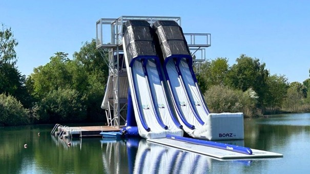
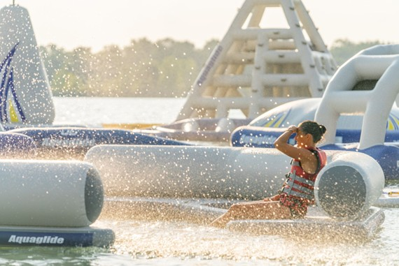
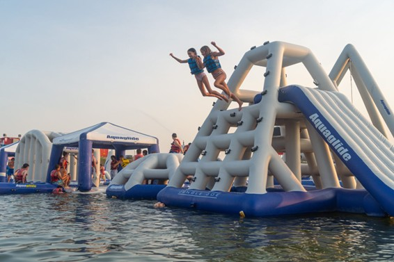

Terug naar vorige pagina

Waterpretpark
Het gloednieuwe waterjumppark, nog steeds gelegen aan onze fantastische strandzone, is dit jaar een nóg explosievere mix van plezier, glijden en pure adrenaline.
Met de adembenemende 12 meter hoge Xtreme-toren, een gigantisch XXL opblaasparcours op het water en een heleboel te gekke wateractiviteiten voor iedereen, is dit dé plek voor een onvergetelijke zomerdag vol actie en spetterplezier.
Iedereen is welkom vanaf 7 jaar, voor de Xtreme-toren moet je minstens 10 jaar oud zijn.

